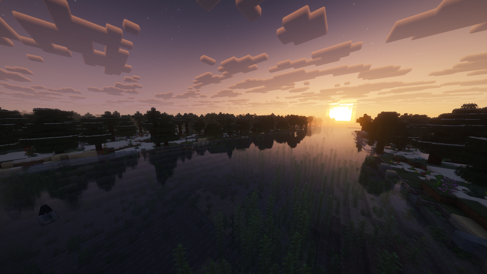
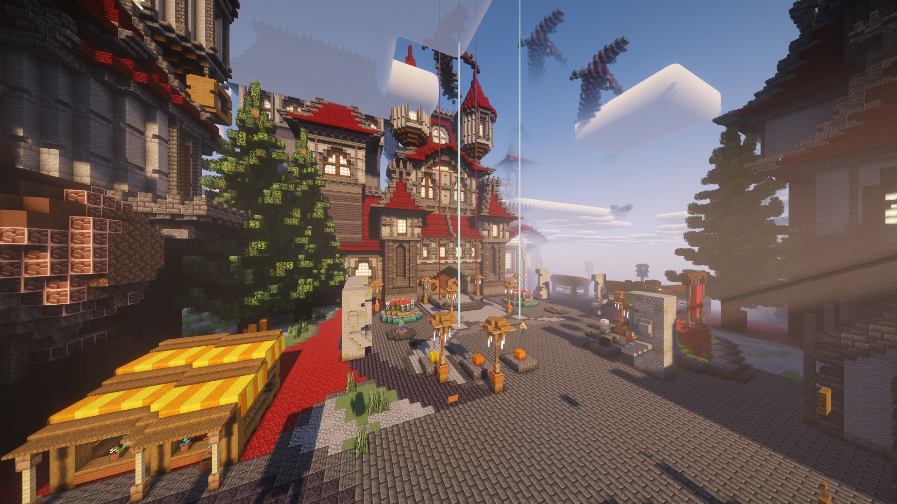
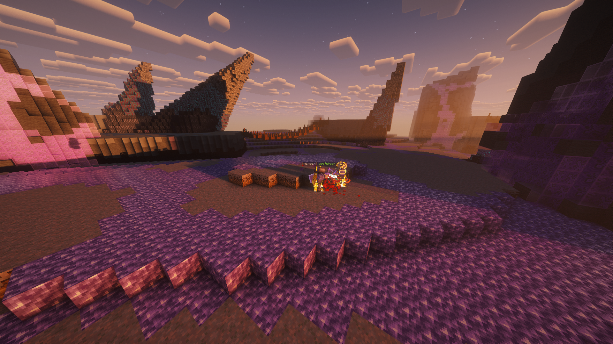

Infuse, Custom Effects & Abilities. Earth, Politics, Kingdoms, Land Creation and invasion.
Elysium is a server in which civilization is recreated in Minecraft. Players can create cities and nations on a custom map of the Earth.

The server uses a custom map you can access online and shows all towns and nations! Players can explore the map as well as create towns and cities with KingdomsX.

The server uses Vault as its main economy for both Infuse and Earth.

Engage in geopolitics, roleplay, and converse with members of our community! Join our Discord server and connect with our community!
The server first launched around the end of February - Beginning of March!
Yes! The server supports cracked Minecraft accounts!
The server runs on Minecraft version 1.21 and above.
Beta Testers will be released soon, full server will be released at the end of April.